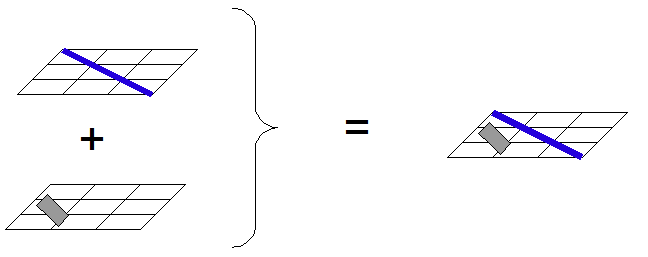

In order to create fast and high available web mapping applications, caches are widely used. In web mapping, the usage of tiles is a way of caching the geospatial content in order to avoid time consuming data extraction and data symbolization. The general idea is to prepare, on server side, tiles which contain the data and, on client side, to load asynchronously the tiles in order to provide a better user experience.
If tiles are created, this means that a cartographic server is not used anymore in production environment. The cartographic server will be used only for the generation of tiles.
- Allow the creation of reactive applications because access to tile time is low
- In conjunction with AJAX technology (asynchronous load), the tiling offer a better user experience
- Support high loaded applications because no data pocessing is required
- It is needed to define in advance which zoom levels will be pregenerated
- For application with a lot of layers, a strategy is needed to present more than 6-8 layers. In this case, JavaScript libraries are not very performant for handling 500+ of tiles. The solution is to merge tiles on server side:
On the server side, if two layers are requested by the client, the tiles of the two layers will be merged (this implies transparency) and only one tile will be sent to the client.
Note
It’s possible to imagine that the tiles are generated on demand by a WMS server. This is probably not a good idea: let’s imagine a map with 5 layers. If, per layer, 20 tiles need to be prepared, this would mean 100 WMS queries for one zoom in action. By doing that, the limits of the WMS will be reached with a low number of users and the waiting time will be high. The best way is to pregenerate all the tiles.
So, in order to avoid data processing, the tiles need to be pregenerated. This process can be time consumming.
In OpenSource world, two main tile generators are used:
- TileCache: python implementation
- GeoWebCache: java implementation, integrated in GeoServer
Note
If you have an orthophoto of an area of 300 km x 300km and you want to produce tiles with a resolution of 1m, the 256x256 pixels tile generation process will generate 1172 x 1172 = 1‘373‘584 tiles. If the tile generator can produce 4 tiles/s, than it will take about 4 days.